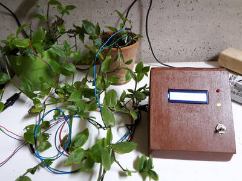

2016-01-14 - Nº 37

Editorial
Aqui está a Newsletter Nº 37 no seu formato habitual. Agora às quintas-feiras. Se gostar da Newsletter partilhe-a!
Todas as Newsletters encontram-se indexadas no link.
Esta Newsletter tem os seguintes tópicos:
Esta semana ficamos a conhecer a nova aposta da Mozilla para o IoT - Chirimen. Passaram-se 30 anos desde o lançamento do MIPS R2000. Cálculos complexos fazem "crashar" os CPU da família Skylake da Intel. Foi lançado o Kernel Linux 4.4. A Amazon anunciou a plataforma Alpine PoC que usa o ARMv7 e o ARMv8.
Esta semana apresentamos diversos projetos de maker e na rubrica "Documentação" apresentamos quatro livros (eBooks) que podem ser descarregados livremente e que esta semana são sobre Raspberry PI, Projetos de electrónica, Python e Open Source. Falamos também nas revistas Programar de Dezembro e a MagPI de Janeiro.
 João Alves ([email protected])
João Alves ([email protected])
O conteúdo da Newsletter encontra-se sob a licença  Creative Commons Attribution-NonCommercial-ShareAlike 4.0 International License.
Creative Commons Attribution-NonCommercial-ShareAlike 4.0 International License.
Novidades da Semana ^
-
"CHIRIMEN is designed for Web developers to MAKE Real things that are connected to the Web. The CHIRIMEN is powered by Boot to Gecko and uses GPIO/I2C WebAPIs to control devices using web technologies."
It's been 30 years since the launch of MIPS R2000
_"A decade before IBM launched the world’s first smartphone, a team of Stanford University researchers and Silicon Valley veterans came together to design a microprocessor architecture that would forever change the landscape of computing. The year was 1986 and the newly-formed company was MIPS Computer Systems Inc. – a small start-up led by current-day Stanford University president John L. Hennessy. This is the story of MIPS R2000, the first commercially-available microprocessor chipset to implement the MIPS instruction set architecture (ISA) and the first RISC processor widely sold through a profitable licensing business model that has become so widespread today."
Simple instructions for freezing a Skylake Processor
"The people at the community over at http://www.mersenneforum.org have found what appears to be a bug in the new Skylake architecture that can freeze any system that has a Skylake processor. The Mersenne community are a bunch of mathematicians and other folks that use Intel processors to find record prime numbers. They have found all the record prime numbers of the last 20 years. The main website of the community is http://www.mersenne.org where they keep track of all progress in searching for a new record prime number. Owners of Skylake systems have found out that the software package that they use to hunt for prime numbers will freeze their system if they use particular settings. Since this bug is reproducible and has been confirmed on motherboards of many different suppliers and with RAM modules of different suppliers the bug seems to be tied to the processor architecture. The bug is reproducible under Windows and Linux. This software works perfectly normal on all other Intel processors of past generations."
-
"Linux 4.4 has been released This release adds support for 3D support in virtual GPU driver, which allows 3D hardware-accelerated graphics in virtualization guests; loop device support for Direct I/O and Asynchronous I/O, which saves memory and increases performance; support for Open-channel SSDs, which are devices that share the responsibility of the Flash Translation Layer with the operating system; the TCP listener handling is completely lockless and allows for faster and more scalable TCP servers; journalled RAID5 in the MD layer which fixes the RAID write hole; eBPF programs can now be run by unprivileged users, and perf has added support for eBPF programs aswell; a new mlock2() syscall that allows users to request memory to be locked on page fault; and block polling support. There are also new drivers and many other small improvements."
-
"Annapurna Labs, an Amazon.com company (NASDAQ:AMZN), today announced the Alpine platform-on-chip and subsystems product line that enables original equipment manufacturers (OEMs) and service providers to deliver next-generation digital services for home gateways, Wi-Fi routers, and Network Attached Storage (NAS) devices. With a wide portfolio of platforms using 32-bit ARMv7 or 64-bit ARMv8 architectures and a rich set of peripherals, Alpine provides high performance for UHD video streaming, secure storage, application virtualization, Internet of Things (IoT), and cloud applications, opening the door to a wide range of innovative digital and multimedia services for the connected/digital home. Several Alpine-based products are already available, and today Annapurna is making Alpine available to other OEMs and service providers."
Ciência e Tecnologia ^
Rice makes light-driven nanosubmarine
_"Though they're not quite ready for boarding a lá “Fantastic Voyage,” nanoscale submarines created at Rice University are proving themselves seaworthy. Each of the single-molecule, 244-atom submersibles built in the Rice lab of chemist James Tour has a motor powered by ultraviolet light. With each full revolution, the motor's tail-like propeller moves the sub forward 18 nanometers. And with the motors running at more than a million RPM, that translates into speed. Though the sub's top speed amounts to less than 1 inch per second, Tour said that's a breakneck pace on the molecular scale."
Making 3-D imaging 1,000 times better
"MIT researchers have shown that by exploiting the polarization of light — the physical phenomenon behind polarized sunglasses and most 3-D movie systems — they can increase the resolution of conventional 3-D imaging devices as much as 1,000 times."
FaceDirector: Continuous Control of Facial Performance in Video
"We present a method to continuously blend between multiple facial performances of an actor, which can contain different facial expressions or emotional states. As an example, given sad and angry video takes of a scene, our method empowers a movie director to specify arbitrary weighted combinations and smooth transitions between the two takes in post-production. Our contributions include (1) a robust nonlinear audio-visual synchronization technique that exploits complementary properties of audio and visual cues to automatically determine robust, dense spatio-temporal correspondences between takes, and (2) a seamless facial blending approach that provides the director full control to interpolate timing, facial expression, and local appearance, in order to generate novel performances after filming. In contrast to most previous works, our approach operates entirely in image space, avoiding the need of 3D facial reconstruction. We demonstrate that our method can synthesize visually believable performances with applications in emotion transition, performance correction, and timing control."
A New Way to Print 3-D Metals and Alloys
"A team of Northwestern Engineers has created a new way to print three-dimensional metallic objects using rust and metal powders. While current methods rely on vast metal powder beds and expensive lasers or electron beams, Northwestern’s new technique uses liquid inks and common furnaces, resulting in a cheaper, faster, and more uniform process. The Northwestern team also demonstrated that the new method works for an extensive variety of metals, metal mixtures, alloys, and metal oxides and compounds."
A New Type of 3-D Printed Ceramic Could Revolutionize How Spacecraft Are Built
"Because they are strong, light, and heat-resistant, ceramics are an incredibly important material for aerospace applications, such as hypersonic jets and space shuttles. That's why 3-D printing ceramics could be useful for companies designing aerospace precision parts like Boeing, Space X, and NASA. Except for one problem: 3-D printed ceramics aren't tough enough to go to space. But a new material design innovation may have just put that problem in the past."
MesoGlue - Will This Fancy Metallic Glue Kill Soldering?
"If you want to piss off an electrical engineer, tell them that future electronics might be built using a room-temperature metallic glue instead of conventional soldering techniques. Despite the tedium, burns, bad joins, and dangerous lead fumes, soldering is a prized and hard-fought skill. It's also unavoidable: a technique central to absolutely everything to do with building and repairing electronics at all levels. Materials scientists at Northeastern University in Boston are daring to suggest, however, that its days may be numbered. This is thanks to a recent creation dubbed MesoGlue: a "revolutionary joining solution that lets you attach items together with a metal bond, at room temperature." Soldering without the heat, in other words. The new material is described in this month's Advanced Materials and Processes."
Documentação ^
A documentação é parte essencial do processo de aprendizagem e a Internet além de artigos interessantes de explorar também tem alguma documentação em formato PDF interessante de ler. Todos os links aqui apresentados são para conteúdo disponibilizado livremente pelo editor do livro.
Livros

The Official Raspberry Pi Projects Book
"The Official Raspberry Pi Projects book is out now with 200 pages of ideas, inspiration and guides to help you with your next Raspberry Pi project!"
-
"This is a compilation of 21 different projects (over 100 pages) covering a wide span of different circuits."
-
"a free book on programming using the Python language. It serves as a tutorial or guide to the Python language for a beginner audience. If all you know about computers is how to save text files, then this is the book for you."
-
"I anatomize a successful open-source project, fetchmail, that was run as a deliberate test of the surprising theories about software engineering suggested by the history of Linux. I discuss these theories in terms of two fundamentally different development styles, the
cathedral'' model of most of the commercial world versus thebazaar'' model of the Linux world. I show that these models derive from opposing assumptions about the nature of the software-debugging task. I then make a sustained argument from the Linux experience for the proposition that ``Given enough eyeballs, all bugs are shallow'', suggest productive analogies with other self-correcting systems of selfish agents, and conclude with some exploration of the implications of this insight for the future of software."
Revistas
Revista PROGRAMAR Edição 51 – Dezembro de 2015
"Nesta edição continuaremos também a premiar os autores dos três melhores artigos, dado o sucesso nas edições anteriores. E os leitores devem dar a sua opinião para que possamos premiar correctamente. Assim nesta edição trazemos até si, como artigo de capa, um artigo sobre Travessia de uma árvore de diretórios usando recursividade de Patricio Domingues, Vítor Carreira, Carlos Grilo. "
-
"Join us in the New Year 2016 edition for some stunning Minecraft mashups and 10 New Year’s resolutions made possible with Raspberry Pi. Main Articles: Minecraft Mashups: Stunning Raspberry Pi projects that bring Minecraft’s virtual world to life; Your #PiZero projects: Some of your best ideas and creations made with the $5 computer; Sense HAT special: We celebrate Tim’s successful launch with more games & guides; New Year, new you!: Awesome projects to help keep you honest in 2016; And much, much more!"
Modelos 3D ^
Com a disponibilidade de ferramentas que permitem dar azo a nossa imaginação na criação de peças 3D e espaços como o thingiverse para as publicar, esta rubrica apresenta alguns modelos selecionados que poderão ser úteis.
Fully Customizable Twisted Gears (Parametric) (http://www.thingiverse.com/thing:1241118)

Wow! These things are cool. Using the customizer, you can create a gear(s) that can have any size, and all dimensions of the gear and its teeth are customizable.
Customizing in OpenSCAD is faster, and you can use my built in animation features. Please ignore the "animate" variable when using Customizer. To animate this model, set your frame rate, and set the steps to 360. Then, change "animate" from 0 to 1. you can set it back to 0 to re-center the gears so they are 90 / 45 offset instead of arbitrarily.
Note: When printing NON-double gears, be sure to mirror one of them. Otherwise, they will not mesh. When printing doubled gears, they will always mesh one way or another.
Braille Learning Board (http://www.thingiverse.com/thing:1250378)
This 3d model is a board that can be used to teach people braille. All of the letters of the alphabet are on this board.
Support for Dremel 4000 (http://www.thingiverse.com/thing:1259799)
Support to fix a Dremel to your table and use it free handed.
Projetos Maker ^
Diversos Projetos interessantes.
Introducing Easy Pulse: a DIY Photoplethysmographic Sensor for measuring heart rate
"When I first built the Heart rate measurement through fingertip project, the infrared LED and photodiode used for finger photoplethysmography were actually from salvaged parts, and therefore, I could not provide specifications for them in the article. As a result of that it takes quite a bit of time to replicate that project with a different set of IR LED and photodiode as the values of the current limiting and biasing resistors may have to be changed for the new sensor to work properly. Today, I am going to talk about a revised version of the same project but with all the components specified this time. The new version uses the TCRT1000 reflective optical sensor for photoplethysmography. The use of TCRT100 simplifies the build process of the sensor part of the project as both the infrared light emitter diode and the detector are arranged side by side in a leaded package, thus blocking the surrounding ambient light, which could otherwise affect the sensor performance. I have also designed a printed circuit board for it, which carries both sensor and signal conditioning unit. I have named the board “Easy Pulse” and its output is a digital pulse which is synchronous with the heart beat. The output pulse can be fed to either an ADC channel or a digital input pin of a microcontroller for further processing and retrieving the heart rate in beats per minute (BPM)."
Meet Fobble - a general purpose Wireless Breakout Board!
"This week I have been working on another of my standard footprint 50mm x 50mm boards - it is a general purpose wireless module carrier board:- Fobble. That's a BLE Fob - for anyone who misses the pun. In the last few weeks there have been a number of applications arise - that could easily be addressed with an easy to use, generic wireless platform. These have included keyfob or pendant applications - requiring a small coin cell powered board - to a generic wireless board that can be stacked to one of the processor boards to provide wireless connectivity."
ArdLock – Arduino Door Lock
"This a door lock built as fun project.It is quite easy to build and a fun way to learn and improve your knowledge of arduino.I tried to add a 16*2 display but there werent enough GPIO pins on arduino Uno.If You are interested in adding a display you would need an arduino Mega."
Mullard 3-3 Amplifier Project (Part 1)
"Mullard 3-3 is quiet popular 3W tube amplifier introduced by Mullard Ltd in 1956. A schematic and design detail of this amplifier is available in "Mullard Circuits for Audio Amplifiers" book and in National Valve Museum article. This amplifier is based on EF86, EL84 vacuum tubes and EZ80 full wave rectifier tube. In this project we decided to construct this original Mullard 3-3 Amplifier with some slight changes and commonly available electronic components."
Lux Meter Module
"LUX Meter project has been design to measure the illumination. Illumination is luminous flux falling on surface area of photo diode. This illumination converted to corresponding voltage using Op-Amp circuit."
Dual Frequency RC Outlet Webserver
"This project is an ESP8266-based "home automation" server that can control multiple RF-controlled electrical outlets on 315MHz and 434MHz. Using two receivers and two transmitters (one pair for each frequency), it can control most commonly available remote controlled outlets. There are a ton of resources on the web for how to interface with this type of outlet. I simply extended the concept to work with both of the common frequencies and added a web interface."
Neopixel Giant Thermometer Scarf

"Motor feather, it's cold outside. Make this wearable high tech, low tech scarf with a built-in thermometer. No longer will you be wondering how really cold it is when you step outside. This is suitable as a nice beginner project to delve into Arduino with sensors and neopixel LEDs."
230 VAC Timer
"Classic AC 230 V Timer project can be used in all application requiring a timer of up-to 3 Minutes to operate or control any AC mains load of up-to 200 Watts. This project is based on the Classic 555 Timer IC, triggering a TRIAC. Input and Output is Optically Isolated."
Upgrading TI-86 batteries to Li-ion
"Dalius decided to upgrade his graphing calculator, a TI-86. He has been complaining that the calculator has been draining the batteries too fast."
Table Tennis Score Board
"This is a 3 buttons control table-tennis score board, 1st player, 2nd player and reset."
Guide to ESP8266 and Tweeting Using ESP8266
"I learnt about Arduino 2 years ago.So I started playing around with simple stuff like LEDs,buttons,motors etc.Then I thought wouldn't it be cool to connect to do stuff like displaying the day's weather,stock prices ,train timings on an LCD display.I found that this could be done by sending and receiving data through the internet.So the solution was connecting to intenet. There began my search on how to connect the Arduino to internet and send and receive data.I learnt about wifi modules on the internet and found them to be very costly.Then I learnt of the ESP8266."
2 Digit 99 Seconds Timer
"2 Digit Count Down Timer is a utility Count Down timer project for upto 99 seconds of countdown time. This project can find many uses in your shack and home. The relay output remains on during the Count Down period, allowing you to interface load or alarm that you want to keep it on for a certain amount of time (in seconds)."
How to Make an Electric Toothbrush
"In today's video I'll show you a great idea on how to make an electric toothbrush at home. It didn't take a long time to me to construct a handmade electric toothbrush and share the technology"
Laser engraver with arduino
Link em PT: Máquina de gravação a Laser com Arduino
"This machine is designed to make the laser engrave in wood and opaque plastic, having an Arduino and the GRBL as machine automation basis. The machine axis are just the X and Y axis, which move a laser with power 1w 445nm, and this article aims to provide everything you need to make, without waiving of mechanical and electronic knowledge."
Micro-usb 30F Supercapacitor Flashlight
"This is an example of a supercapacitor flashlight that can be charged with a standard 1A smartphone charger."
LED VOLTMETER

"I recently make a variable power supply with LM 317 ( I will post it later). so now need a voltmeter that can tell me the out put voltage and fixed it with the power supply. I goto shops to find a small voltmeter. but I cant find me so I think to made my own volt meter. Now the challenge is how to output the result. then i have a good idea with leds. I search in internet about make a voltmeter and collect information and make my own voltmeter. This voltmeter I have made is depend on zener dioads. I use 3.6v, 6.3v, 9v, 12v, 15v and 18 v. You can customize it and make it read any voltage!."
Plant-Duino 1.0 Green-Idea

"System to monitor soil moisture on both plants through two simple steel nails which replaced the previous hygrometers completely oxidized. Arduino One checks the values ??of the various sensors including a DHT11 and communicates with the observer what are the requirements of the plants set in the code. Two LEDs front, side to display 16x2 I2C, one green and one red bottom top give a sort of "notification" of the visual situation. Alarm red, green situation ok. The plants, through this system communicate their needs such as thirst, too much water, cold, heat or extremely high or low humidity by writing directly on the display. A toggle switch on and off the display backlight. The whole is housed in a suitably drilled in wood to minimize overheating various especially in the hot season; Opening front upward. Attack Power and USB Arduino are accessible directly from the outside through the slots specially organized as you can see from the photos .. :)."
Hardware Random Bit Generator
"The article appearing below was one of my recent posts to the sci.crypt newsgroup. These are some notes about building a hardware random bit generator. Johnny von Neumann once said that anybody who contemplates arithmetic methods for the generation of random numbers is in a state of sin. What he meant by that is this: if you try to generate random numbers using only software, the results will necessarily depend on the state of your machine at the outset of the process, and are therefore (at least in principle) insecure. That is, somebody could conceivably reconstruct your allegedly random bitstream."
TV Game Console by Arduino
"I will provide the circuit diagram and the code for the game, you can see the working of the game in the attachment."
Homebrew - Dual Thermometer
"What Does the Brewb0y do? Well... when homebrewing, temperatures are a big deal. I had a traditional thermometer but constantly sticking it in and out of boiling water was getting very tiring (and sometime a bit dangerous, a face full of steam!) Not only that but I had no way of checking the temperature of my mash without taking the lid of each time. So I came up with the idea of a device that I could share between my mash tun and my boil pot to keep an eye on both at the same time in real time, from a distance. The Brewb0y was born! A simple Nokia screen, Arduinio and two 3 meter length thermometers!"
Interactive LED Shoes - Arduino
"Stand out from the crowd with these cool Interactive LED Shoes that are activated by movement. Choose from six different effects, to mix things up a little next time you are out on the town!"
Arduino Controlled Beehive Fumigator / Air Freshener
"Within the relative chaos of my domestic arrangements, I have one small oasis of perfect order. One thing that I can call 'organised' and 'fully functional'. One thing that I can touch and know that it is reliable and ready for action at a moments notice - and that is my wonderful home made Hackable Arduino Prototyping Board. This vaporisation project was initially envisaged to be a simple fumigation machine for beehives, but very quickly got completely out of hand and developed into so much more than that. Indeed, people are now flocking from all four corners of my island to witness the amazingly performance of this machine as it sits in the centre of my living room vaporising all manner of exotic substances, including frankincense and cheese."
LED Pop-up Holiday Card

"This year's (2015) Holiday card features a pop-up design back-lit by a LED and no wires! If you have the time, homemade cards are some of the coolest things to give people. The rise in the popularity of the Silhouette cutting machines has really given this year's card a chance to reach the more "professional" market. The card is relatively simple to make - I encountered a few bumps along the way, but don't worry, you probably won't make the same mistakes because I'm pointing them out. I produced 15 LED cards and 3 non-LED cards over the course of four days before I had to mail all the cards out. Go through this instructable to learn how to make your LED Pop-up cards in no time!"
How to Make an Arduino Powered CNC Machine
"Step-by-step instructions on how to build a low cost CNC machine controlled with an Arduino Uno!"
Arduino multiple timer. Day based and alarm based
"So I was asked by someone if I can make something that will start a motor at a fixed time. Ok ... easy. But the motor should start in each day at a different hour or perhaps Monday and Friday at an hour and Sunday not at all, or whenver he wants to program the motor to start. I thought this would make a nice project, especially that he came with the request to start three motors after all."
DIY-Thermocam – an open-source, do-it-yourself thermographic camera
"The DIY-Thermocam is an open-source, do-it-yourself thermographic camera based on the popular, high-resolution FLIR Lepton thermal array sensor. The aim of this project is to give private persons, educational institutes and small companies access to a portable and affordable thermal imaging plattform. "
Smokerduino
"I had made a Sous Vide controller and thought it might work well for my smoker too. All I really had to do was change the sensor form a Dallas 18B20 to a thermocouple. The Dallas sensor tops out at about 250 degrees Fahrenheit. This particular smoker is electric but the controller will work on charcoal fired ones too. You just use the relay to run a fan and motorized damper instead of the heating element."
555 Timer emulator for Arduino
"This is an emulation of a 555 timer chip that runs on an Arduino. It can run most basic 555 circuits with no change to the program or the wiring of the emulator. The picture shows the emulator setup to run an astable oscillator circuit."
atmega16u2 virtual serial example using LUFA Library
"Sending data from a microcontroller is a pretty common requirement in a lot of the projects I work on. One way of doing it is sending serial data out from the uC to a serial to usb converter chip to a computer. This has the advantage of involving very little code overhead for both the uC and the computer. It does also make it more difficult to route on a PCB (especially trying to fit it onto a single layer) and of course you have to pay for the serial/usb converter chip which in my experience range from about 2.50 to 5 euro per chip. An alternative to this is to have the uC communicate directly via usb with the computer. This can be done on a uC entirely in software – the V-USB library for atmel microcontrollers allows almost any atmel micro to communicate via usb. This creates a large CPU overhead as most of the uC’s time is spent maintaining the USB connection – leaving little time for anything else. uC’s with USB hardware in them offset this problem to a certain extent by including dedicated USB hardware so less CPU time is needed to use USB. The LUFA (Lightweight USB Framwork for AVRs) is a library aimed at taking advantage of this USB hardware. It comes with loads of examples that work with several types of atmel chips. The one that I chose is the atmega16u2 because it was pretty cheap and it was used the arduino uno as the usb-serial converter for the board. This meant that there was schematics of the board layout available online which came in very hany for making my own board. This board was intended to be used as part of the PlantBot project I’m working on but it ended up just being a LUFA virtual serial test board."
DIY Arduino Game Show Buttons
"How to make a Game Show Buttons using Arduino, cheap and easy, for unlimited fun!!"
PiNoculars - Raspberry Pi Binoculars
"Strap a Raspberry Pi 2 + Camera to a pair of binoculars (or telescope, microscope, etc.) and use one of adafruit's touch LCDs + custom raspbian image to view and take pictures. (Scroll through the photos above for examples / comparisons) This project takes more time, money and is clunkier than if you were to purchase a commercial product. You're probably not on instructables because you wanted to buy a solution ; )"
MASLOW: an Open WiFi Detector with ESP8266
"Hello friends this time im gonna show you how to make a detector for open wifi with the module ESP8266, this detector notifies you when an open WiFi or non encrypted is near to you, when it detects one kind of this wireless net, through a LED it will indicate with blink and one time it notifies you the module will go to sleep mode in order to save battery."
Supercapacitor Programmable Attiny LED flashlight
"Long time ago, I saw that some drivers in flashlights are using Attiny microcontrollers to deal with different modes. At that time I did not have arduino and I did not know how to program one. Times have changed and my skills in programming grown. I wanted to program Attiny85 with arduino as ISP to achieve results similiar to ones that were in flashlights. I wanted at least three modes: 100% ->30% -> strobe I had really hard time programming Attiny. I am really not good in programming so it took me some time to achieve results that you can see in the video."
Ultimate 14-in-1 Soldering Station!
"This is a project that took me about 2 months to make, Not because it's very complicated, But if you look at the list below, You'll probably understand why... I don't know why, But for some reason, It's sort of addicting to think of more features to add!"
DC Power Supply To Charge Your Phone & Small Electronic Devices
"A variable DC power supply is really useful to keep on your desk for charging your phone, plugging in a raspberry pi or any other low voltage electronic devices. By using voltage regulators you can set just the amounts to output, whether you need 3.3, 5, 12 or any other amount. This is a really fun project that you can customize to your needs, varying the amount of plugs, set the voltage, choose the size etc... I used MDF for the build, however you could make a box out of anything really to house the electronics."
Ultrasonic parking sensor
"It should come as no surprise that I really really want a Tesla. Or really any Electric Vehicle for that matter. The only problem at the moment is that my daily commute takes me 20 minutes on foot each way, so I really can't justify buying a car that will spend most of its life parked in a garage or parked in Seattle traffic. That's why I have to live vicariously through other people, and why I got super excited when I learned that my dad put down a deposit on a new Model S."
World's Smallest MIDI Synthesizer
"A number of people have claimed to make the world's smallest synthesizer. It's a pretty silly ambition because at this level the size makes it extremely impractical, and fiddly to pull out of the socket. Nevertheless, I have created something which is just about as small as a midi synth could ever be. It's physically smaller than an ordinary midi plug!"
Snake with IR Remote Control on Arduino Nano
"Today we will create a simple game named Snake."
Writing AVR assembler code with the Arduino IDE
"Although I have written a lot of code in high-level languages like C++, I enjoy writing assember the most. For inserting assembler code into Arduino sketches, you can read a gcc inline assembly guide. If you have some assembly code and want to use it, there is an easier way than converting it to inline assembly; you can make it a library."
Mega-processor

"What ? The Mega-processor is a micro-processor built large. Very large. How ? Like all modern processors the Mega-processor is built from transistors. It's just that instead of using teeny-weeny ones integrated on a silicon chip it uses discrete individual ones like those below. Thousands of them. And loads of LEDs."
Wireless Arduino with low power consumption
"Warduino is project to replace IQRF modules. It is designed to be compatible with arduino. The base of HW is microcontroller Atmega328 and wireless chip SI4432."
Ping Pong Ball Full colour Binary Clock
"Colour changing 24Hr Binary clock using ping pong balls and full colour LED’s and a Funduino 8*8 matrix board. I have already built a small 12Hr binary clock and fitted it into a computer, this worked very well but was only really half a binary clock (no seconds). So I decided to build a full 24hour with second’s binary clock. As I was designing the clock I decided to try and make it very colourful and pleasant to look at, so I choose full colour LED’s and used ping pong balls to make a nice diffuser! At this stage I hadn’t really thought about how I was going to drive the LED’s I initially thought about using logic gates linked to the PWM pins of the Arduino, but the more I thought about it the more difficult it was. Basically I have 20 5mm full colour LED’s, meaning I have 60 LED’s in total. so at this point I had another think about how I was going to drive all the LED’s and then realised I had the solution in a 8*8 full colour matrix, I had already used a Funduino/colorduino when I made my Plasma box, so this was a logical solution."
That's all Folks!